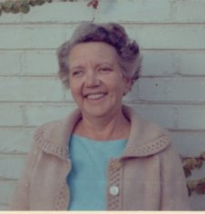
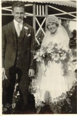

Surnames Individuals Sources Places Gallery

| GRAMPS ID: | I0061 |
| Birth Name: | Ella Susanna Maria Roos |
| Gender: | female |
| Birth: | 1908-07-10 |
| Death: | Estimated death date, estimated about 1988 1 |
| Father: | Jan Stephanus Roos (Birth) |
| Mother: | Beetge (Birth) |
| Siblings: |
| Husband: | Jacob Johannes van der Merwe |
| Children: |

when she died she called out for her sister Nellie
had half sister
Johannes Roos
Jan Stephanus Roos|
| |Maria Margaretha Wilman
Ella Susanna Maria Roos|
| 2 Beetge
| Beetge|